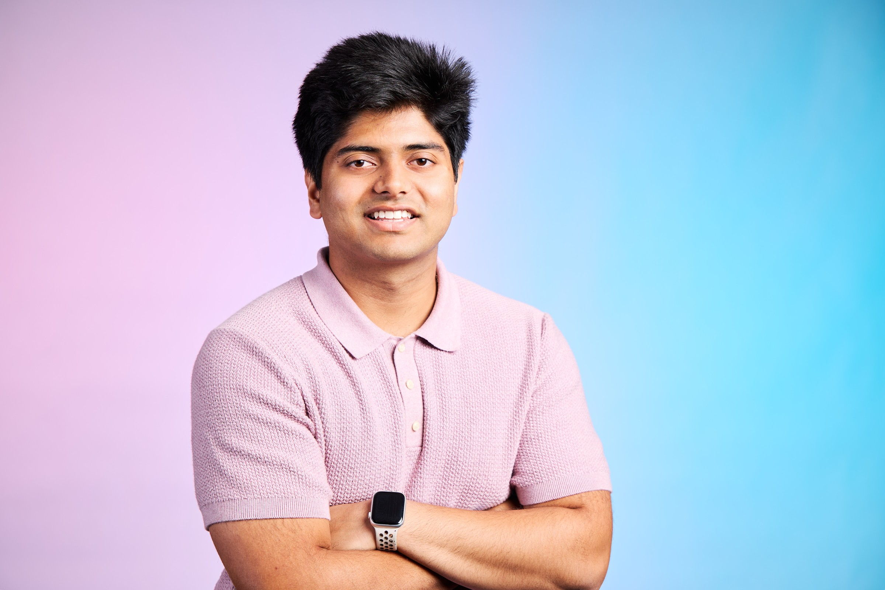

Distribution-Aware Algorithm Design with LLM Agents
S. Koganti, Priyadarsi Mishra, P. Beneventano, T. Galanti
Preprint, 2026.

Senior Undergraduate Student
Texas A&M University
priyadarsimishra [at] tamu [dot] edu
Hello! I am Priyadarsi Mishra, a senior undergraduate student at Texas A&M University studying Computer Science with minors in Statistics and Mathematics. I am fortunate to be advised by Tomer Galanti.
My research interests lie broadly in multimodal reasoning, world models, and efficient AI systems. I am particularly interested in understanding how models learn representations of temporal and physical structure, how those representations support reasoning and prediction, and how model and system design can make these capabilities more efficient and scalable. I also have a complementary interest in reliable agentic reasoning, including how language models use feedback, verification, and interaction while maintaining robust reasoning.
My recent work spans representation learning, LLM-guided program search, multimodal systems, world models, and agentic reasoning. I am always happy to discuss research ideas or potential collaborations via email.
 Ads. Ads.
Ads. Ads.Distribution-Aware Algorithm Design with LLM Agents
S. Koganti, Priyadarsi Mishra, P. Beneventano, T. Galanti
Preprint, 2026.
LLM Priors for ERM over Programs
Priyadarsi Mishra*, Shivam Singhal*, Eran Malach, Tomer Galanti
International Conference on Machine Learning (ICML), 2026. *Equal contribution.
On the Alignment Between Supervised and Self-Supervised Contrastive Learning
Achleshwar Luthra, Priyadarsi Mishra, Tomer Galanti
International Conference on Learning Representations (ICLR), 2026.
Ads, May 2026 - Aug. 2026. Ads, May 2025 - Aug. 2025.